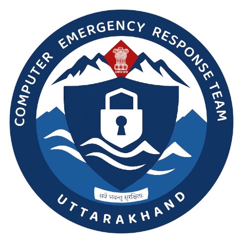

🌱 Starting at VIT Chennai
Where it all began
It was July 2024. I had just walked through the gates of VIT Chennai with a suitcase full of clothes and a head full of ambition, but absolutely zero clarity about what I wanted to build my career around. I had chosen Computer Science and Engineering — a decision driven more by instinct than a concrete plan.
The first few weeks were a blur. Orientation sessions, lab tours, meeting people from every corner of the country. Everyone seemed to have their path figured out — some wanted to crack FAANG, others were already building apps. And there I was, just soaking it all in, trying to figure out which rabbit hole to dive into.
VIT's campus had a unique energy. The diversity of clubs, hackathons, and technical events meant there was always something happening. I attended workshops on web development, sat through sessions on machine learning, and even explored competitive programming for a while. Each exposure added a new lens through which I could view technology.
But somewhere between configuring a Linux virtual machine and sniffing network packets for the first time in a lab, something clicked. I didn't just want to build software — I wanted to understand how systems could be broken, and more importantly, how they could be defended. That quiet fascination with cybersecurity was the seed that would eventually grow into the defining theme of my college journey.
💻 Building the Fundamentals
Learning the rules before bending them
Before you can defend a castle, you need to understand how it's built — every brick, every gate, every hidden passageway. My first and second years at VIT were exactly that: a deep dive into the architecture of computing.
Started with the classics. C++ taught me about memory management and low-level thinking — concepts that are crucial when you're later analyzing buffer overflows. Java introduced me to object-oriented design and the ecosystem of enterprise applications.
Python became my Swiss Army knife. From scripting automation tasks to building quick prototypes, it was the language I kept coming back to. Later, it became my primary tool for writing security scripts and building cybersecurity tools.
The backbone of every technical interview and, more importantly, the foundation for understanding how software processes and stores data. Hash tables, trees, graph algorithms — each concept later helped me understand how attackers exploit inefficiencies in code.
Understanding process scheduling, memory management, and file systems wasn't just theory. When I later had to analyze malware behavior or configure hardened Linux servers, these concepts were my compass.
TCP/IP, the OSI model, routing protocols, subnetting — this course transformed how I saw the internet. Every website visit became a packet journey, and every firewall rule told a story about trust boundaries.
SQL queries, normalization, transactions — and later, understanding SQL injection in its full depth because I knew exactly what was happening under the hood.
This was the turning point. RSA, AES, hashing algorithms, digital signatures — cryptography was where mathematics met security. Understanding these protocols gave me the ability to evaluate the strength of security implementations, and it cemented my decision to pursue cybersecurity as a career.
"These weren't just subjects I passed exams in. They became the mental models I use every time I assess a system's security posture."
🔐 Discovering Cybersecurity
When curiosity became obsession
There's a moment every cybersecurity professional remembers — the exact instant when the field stopped being "interesting" and became an obsession. For me, it happened during a late-night session where I was using Wireshark to capture packets on my own network. Watching the raw data flow across my screen — seeing passwords travel in plaintext on an unsecured connection — was like pulling back the curtain on how fragile our digital world really is.
After that night, I couldn't stop. I dove headfirst into every tool, every framework, every methodology I could get my hands on:
But it was never just about the tools. What truly fascinated me was the mindset — the ability to think like an attacker while building like a defender. Cybersecurity isn't just a technical discipline; it's a way of thinking about trust, risk, and the assumptions we make about the systems we build.
I started spending weekends in CTF competitions, hacking away at challenges that tested everything from reverse engineering to cryptanalysis. Each flag captured was a small victory, but the real win was the problem-solving muscle I was building.
🏗️ Building Projects
Theory dies without practice
I've always believed that the best way to learn is to build. Courses and certifications give you knowledge, but projects give you understanding. Here are four projects that shaped my thinking and pushed my skills to the next level — each one a different problem, a different stack, and a different lesson.
RescueWings
Autonomous Search & Rescue Drone System
RescueWings was developed as part of the Smart India Hackathon (SIH) to improve search and rescue operations during natural disasters and emergency situations. The goal was ambitious: reduce the time required to locate survivors while minimizing the risk to rescue personnel.
Our team designed an autonomous drone-based solution capable of surveying disaster-affected areas, detecting stranded people and animals using machine learning, and transmitting live information to rescue teams. To extend the search into collapsed buildings or confined spaces, the system also incorporated a deployable mini-drone — a drone within a drone.
We built autonomous area coverage using predefined GPS waypoints, live aerial surveillance through a Raspberry Pi-mounted downward-facing camera, and real-time video streaming to the ground control station. Flight planning and mission control were handled through QGroundControl and PX4 HITL simulation.
Our team was selected among the Top 180 teams out of more than 900 teams during the SIH college selection process — a testament to the problem's significance and the strength of our solution.
Sentinel SOAR
Security Orchestration, Automation and Response Platform
Sentinel SOAR was inspired by a reality I witnessed firsthand during my CERT Uttarakhand internship: modern Security Operations Centers handle thousands of alerts every day, and without automation, analysts drown in noise. I wanted to build something that could change that.
The platform collects security alerts, orchestrates predefined response workflows, and assists analysts in investigating incidents more efficiently. It features a centralized incident management dashboard, automated alert triage and prioritization, security playbooks for repetitive tasks, and workflow automation to reduce manual effort.
Building Sentinel SOAR taught me the full incident response lifecycle — from initial detection through containment, eradication, and recovery. I learned how SOC workflows actually function, how security playbooks are designed, and how automation can free up analysts to focus on the threats that truly matter.
The architecture is integration-ready for SIEM and threat intelligence platforms, with incident tracking, reporting, and a monitoring dashboard that gives real-time visibility into the security posture.
ITAIS
ITAIS (Intelligent Threat Analysis and Intelligence System) was born from a simple question: "Can we use AI to make threat detection smarter?" This project pushed me into the intersection of artificial intelligence and cybersecurity — a space that's rapidly becoming the frontier of modern defense.
Building ITAIS taught me about intelligent automation in security workflows. I learned how machine learning models can be trained to detect anomalies in network traffic, classify potential threats, and reduce the noise that overwhelms security operations centers. It was one of the most technically challenging and rewarding projects I've undertaken.
DarkIntelliWeb
DarkIntelliWeb is the project closest to my heart. It's a dark web intelligence and monitoring tool designed to gather, analyze, and visualize threat data from the darker corners of the internet. The goal was simple: give defenders visibility into the spaces where threat actors plan, trade, and operate.
Building this system required a deep understanding of OSINT (Open Source Intelligence) methodologies, web scraping at scale, natural language processing for threat extraction, and data visualization for actionable insights. It also raised important ethical considerations about responsible intelligence gathering — lessons that no textbook could have taught me.
📜 Certifications & Learning
Proving it to the world (and myself)
University coursework lays the foundation, but certifications validate your expertise against industry standards. More importantly, the process of preparing for them forced me to fill gaps in my knowledge that I didn't even know existed.
IBM Cybersecurity Analyst Professional Certificate
This was my first industry-recognized credential. It covered the full spectrum — from threat intelligence and data protection to incident response and forensics. The hands-on labs simulated real-world scenarios: analyzing network intrusions, investigating breaches, and documenting findings for stakeholders. It taught me that cybersecurity isn't just about technical skills — it's about communication and process.
Microsoft Cybersecurity Coursework
Microsoft's cybersecurity curriculum gave me exposure to enterprise-grade security concepts — Azure security, identity management, compliance frameworks, and cloud-native security tools. In a world rapidly moving to the cloud, understanding how to secure cloud infrastructure became a non-negotiable skill.
Hands-On Labs & CTFs
Beyond formal certifications, I spent countless hours in platforms like TryHackMe, HackTheBox, and PicoCTF. These gamified environments taught me to think under pressure, chain vulnerabilities creatively, and document exploits methodically. Every challenge was a micro-course in patience and persistence — sometimes a single flag would take hours of research and failed attempts before that moment of "I got it."
"Certifications gave me the vocabulary. Labs gave me the instinct. Together, they transformed me from someone who 'studies' cybersecurity to someone who 'does' cybersecurity."
🛡️ The CERT Uttarakhand Internship
Where academic meets enterprise

Computer Emergency Response Team — Uttarakhand
Government of Uttarakhand • Cybersecurity Division
If my college journey had a defining chapter, this was it. Getting selected for an internship at CERT Uttarakhand (Computer Emergency Response Team) was both a validation of everything I'd learned and a humbling reminder of how much more there was to know.
Walking into a government cybersecurity facility for the first time was surreal. The scale of operations was nothing like the controlled lab environments at university. Here, the stakes were real — the systems being monitored protected critical state infrastructure, government portals, and citizen data.
What I Worked With
Key Takeaways
The CERT Uttarakhand internship fundamentally changed how I think about security. In a university lab, you attack a single vulnerable machine. In an enterprise environment, you defend thousands of machines simultaneously, with incomplete information, under time pressure, and with real consequences for failure.
I learned that defensive security is not glamorous. It's monitoring dashboards at odd hours, writing incident reports that need to be understood by non-technical stakeholders, and constantly updating defenses against an ever-evolving threat landscape. But it's also deeply meaningful — knowing that your work directly protects people and their data.
This experience bridged the gap between "I know how attacks work" and "I know how to defend against them at scale." It's a gap that no certification or online course can fully close — you have to live it.
🏐 Life Beyond the Terminal
Because resilience isn't just a security term
Here's a confession: my college journey wasn't just about code, packets, and vulnerabilities. Some of the most important lessons I learned happened on the volleyball court, not in front of a screen.
I joined the VIT volleyball team early in my college life, and it quickly became more than just a hobby. Practice sessions at dawn, grueling training routines, and the camaraderie of a team working toward a common goal — it all became a vital part of who I am.
Inter-College Competition
Our team clinched third place in a highly competitive inter-college volleyball tournament. Facing teams from across Tamil Nadu, we battled through grueling matches, learning to perform under pressure and stay composed when the scoreline wasn't in our favor.
IIT Madras Tournament
Reaching the quarterfinals at an IIT Madras tournament was a highlight I'll never forget. Competing against some of the best college teams in the country, we pushed ourselves to the limit. The level of competition was fierce, and every point felt earned.
Basketball
Beyond volleyball, I also played basketball regularly. It was a different pace, a different energy — but the same lessons in quick decision-making, spatial awareness, and team coordination that translate surprisingly well to incident response in cybersecurity.
"Sports taught me that losing isn't failure — quitting is. The same applies to every failed exploit, every broken build, and every bug that refuses to die. You get back up, you adjust your strategy, and you go again."
The discipline of maintaining a training schedule alongside a demanding academic workload taught me time management. The experience of losing critical matches taught me resilience. And the joy of winning as a team — where no single player could have done it alone — taught me the value of collaboration.
These aren't just "soft skills" on a resume. They're the foundation of how I approach every challenge, technical or otherwise.
📈 Looking Back
The delta between then and now
If I could meet my first-year self, I'm not sure he'd believe the journey that was ahead. Three years ago, I was a student who could barely navigate a Linux terminal without Googling every command. Today, I've defended real government infrastructure, built tools that analyze dark web threats, and competed in volleyball at inter-college national levels.
Then Year 1
- Intimidated by unfamiliar technologies
- Learning was scattered and without direction
- All theory, no practical implementation
- Studied concepts to pass exams
- Worked alone on most assignments
Now Year 3
- Excited by new technologies and challenges
- Disciplined, goal-oriented learning path
- Hands-on implementation is the default
- Build projects to solve real problems
- Thrive in collaborative team environments
The biggest shift wasn't technical — it was mindset. I stopped viewing learning as a checklist of courses to complete and started treating it as an ongoing practice. Every new tool, every failed exploit, every debugging session at 3 AM contributed to a compound growth that I couldn't have predicted at the start.
I also learned the importance of community. From study groups that turned into project teams, to online security communities that shared knowledge freely, to teammates on the volleyball court who had my back — growth is never a solo journey.
🚀 What's Next
The road ahead
Three years down, but the journey is far from over. If anything, the more I learn, the more I realize how vast the cybersecurity landscape truly is. Here's what I'm aiming for:
Deepen Defensive Security & Threat Intelligence
I want to go deeper into SOC operations, advanced threat hunting, and threat intelligence frameworks like MITRE ATT&CK and Diamond Model. The goal is to become someone who can not only detect threats but predict them.
Build Impactful Cybersecurity Tools
DarkIntelliWeb was just the beginning. I want to build open-source security tools that help defenders — from automated threat scoring systems to intelligence dashboards that make complex data actionable.
Contribute to Open Source
The security community thrives on shared knowledge. I want to give back by contributing to open-source security projects, writing detailed write-ups, and sharing the lessons I've learned along the way.
Advanced Security Certifications
Certifications like CompTIA Security+, CEH, OSCP, and eventually CISSP are on my radar. Each one represents a new level of expertise and a commitment to continuous learning.
Begin My Professional Cybersecurity Career
Whether it's a SOC analyst role, a penetration testing position, or a threat intelligence engineer — I'm ready to take the skills I've built and apply them to protecting real-world systems, full-time.
Three years ago, I walked into VIT Chennai with nothing but curiosity. Today, I walk forward with skills, experience, a portfolio of projects, and a network of incredible people who've been part of this journey.
The story doesn't end here. It's just getting started.